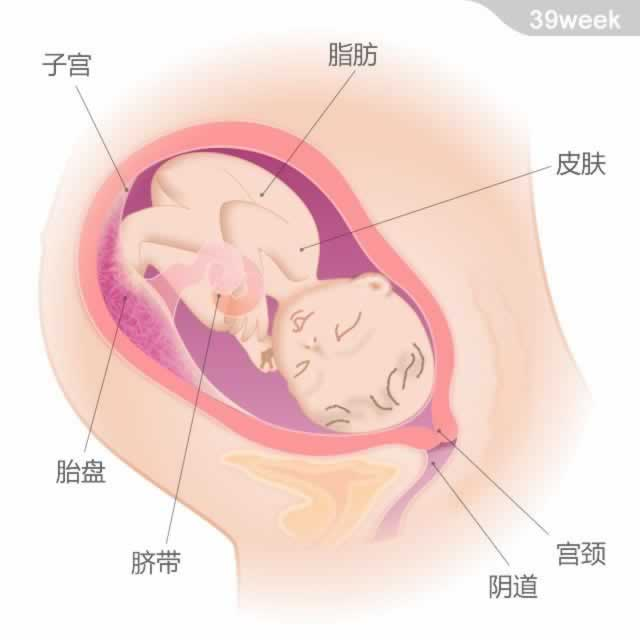
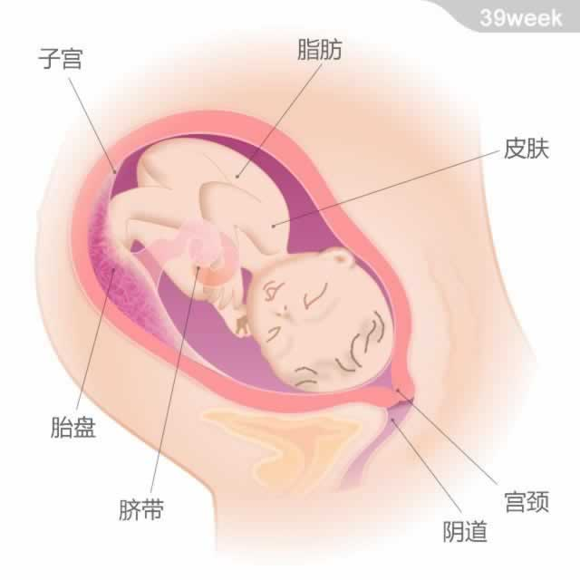

宝宝从头部到臀部的长度约为37~38厘米
临产前，因为宝宝身体表面的绒毛和胎脂脱落，并有其他分泌物产生，所以羊水环境已经有所变化：它变得浑浊，呈现出乳白色。胎盘的功能继续退化，分娩后，胎盘将从子宫壁剥离并停止工作。
大多数的宝宝会在本周出生，但准确到预产期当天出生的宝宝只有5%。因为宝宝出生时要通过产道，尚未闭合的头骨会受到挤压，所以新生儿的头会稍显圆锥形。他全身会覆盖着胎脂和血液，皮肤颜色也不太均匀，可能还有一些皮疹。不用担心，这些表象都是暂时的。

宝宝从头部到臀部的长度约为37~38厘米